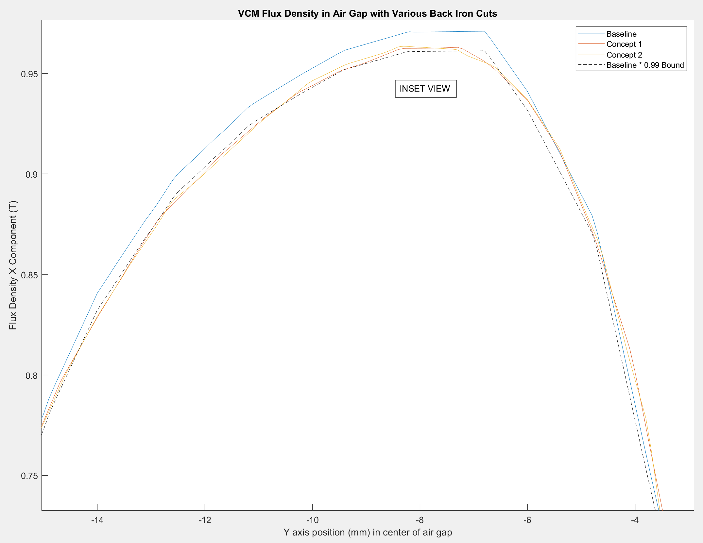

Voice Coil Motor Back Iron Optimization
Updated 12-15-2023
Voice coil motors are used in various industries for positioning, force control, etc. In hard drives, a rotary voice coil motor is used to position the actuator arm. In semiconductor manufacturing capital equipment rotary and linear voice coils are commonly used for high bandwidth, short travel Z axis positioning above a wafer or device. The principle of operation/construnction is to place a set of current carrying wires in a magnetic field generated by permanent magnets. This causes a lorentz force to be exerted on the coil (and a reaction force on the magnet assembly). Control over force (acceleration) is easily attained by a simple amplifier and high precision closed loop position or velocity control is possible with a displacement transducer (encoder, interferometer, etc.).

In positioning stages, voice coil motors are typically carried by other motion axes, therefore it is desirable to reduce the mass of the voice coil or to maximize the force constant/mass ratio. One way to do this is by optimization of the magnet array geometry (hard and soft magnetic materials have high density).
A typical voice coil motor arrangement cross section using a so called "Halbach" array is shown below modeled in FEMM. There are 3 components to a common commercial voice coil motor.
- Coil (commonly copper, aluminum, or copper-clad aluminum)
- "Hard magnetic" Permanent Magnets (commonly strong grade Neodymium such as N50 or N52)
- "Soft magnetic" Back Iron (commonly a low carbon steel such as AISI1010)
The parameters for the above motor can be seen in the table below.
Input VCM Parameters
| problem_thickness | 25 | FLOAT | mm |
| current | 1 | FLOAT | Amps |
| no_turns | 100 | INT | N/A |
| coil_thickness | 5.25 | FLOAT | mm |
| coil_height | 8 | FLOAT | mm |
| coil_gap | 12 | FLOAT | mm |
| air_gap | 0.8 | FLOAT | mm |
| boundary_x | 100 | FLOAT | mm |
| boundary_y | 50 | FLOAT | mm |
| magnet_thickness | 9 | FLOAT | mm |
| halbach1_height | 6 | FLOAT | mm |
| normal1_height | 15 | FLOAT | mm |
| backiron_thickness | 5 | FLOAT | mm |
| backiron_height | 36 | FLOAT | mm |
| magnet_density | 7450 | FLOAT | kg/m^3 |
| backiron_density | 7870 | FLOAT | kg/m^3 |
The flux density in the back-iron is not consistent over its height. Therefore, the un-used material could be removed to reduce the mass of the motor without impacting the force output in the shown coil position.
Observing the flux density at various positions along the back iron appears to be an appropimately linear relationship between flux density and position. From this it appears plausible that a triangular shaped cut could correspond well with good material to remove. Arbitrary triangular cuts can also easily be machined with a form cutter on a CNC milling machine at reasonable cost, or the back iron could be cast by investment, sand, or die.
Cut geometry figure
Consider an optimization problem where it is desired to reduce the back iron mass (over an existing motor) with at maximum a 1% change in the force constant of the motor (the force constant must be at minimum 99% of an un-cut back iron motor) with a minimum back iron thickness of 2mm. This is a common design task when improving existing machinery where the packaging space may be fixed and there may be fabrication constraints on thin walls. By exploring the design space, the optimal design is reached with a 3mm cut at a 12deg angle (of the points on the 0.99 line, 3mm, 12deg is the lightest back iron that reduces total magnet+backiron mass by 8.7%).
Now consider the same optimization problem with a minimum back iron thickness of 0.25mm (0.010"). The optimal back iron cut thickness is now 4.75mm at an angle of 21.75deg as it has 99% of the original force constant and reduces mass by 11.6% (improved over the 2mm thickness limited optimized result, therefore a minimum thickness does restrict maximum performance).
Overlaying the flux density in the air gap of the original design, the first optimized design, and the second optimized design shows the results graphically. The 99% minimum kf follows well with flux density.
Viewing the entire flux density plot shows, on the optimized designs, the flux density in the back iron is consistent compared to variable on the baseline. (a) = Baseline; (b) = optimization 2mm min back iron thickness; (c) optimization 0.25mm minimum thickness

The downsides of this option are the additional cost of fabrication to make a unique shape back iron. Instead of a simple plate that could be waterjet, plasma, or laser cut is now a complex shape that must be machined or cast into the shape. Additionally engineering resources are needed to perform the analysis/optimization for the specific application. However for high performance applications these are commonly the tradeoffs needed to meet specification.
MATLAB Codes
MATLAB and FEMM codes for the optimization and figures can be found below. The scripts assume FEMM is correctly installed and added to the MATLAB path
Comparison to patent literature and academic literature
This type of design optimization was rare to find in textbooks and the literature, but appears common in industry from the patent literature
- https://patents.google.com/patent/US20030052548A1
- https://patents.google.com/patent/US7291953B1
- https://patents.google.com/patent/US20060082753A1
- H. Zhang, B. Kou, H. Zhang and Y. Jin, "A Three-Degree-of-Freedom Short-Stroke Lorentz-Force-Driven Planar Motor Using a Halbach Permanent-Magnet Array With Unequal Thickness," in IEEE Transactions on Industrial Electronics, vol. 62, no. 6, pp. 3640-3650, June 2015
Further research
- Investigate how these results depend on the nonlinear BH curve for different materials (i.e. nickel or cobalt alloys) or lot to lot variability in magnetic properties of common soft magnetic materials
- Investigate how to optimize the geometry for force constant over an expected travel range
- Determine the true optimal back iron shape that maximizes force constant/mass (free of constraint on shape or minimum dimensions)
- Applying similar shape optimization to the permanent magnets (shape, size, direction)
- Comparing the simulation results to experiment
- Ensure the reduction in back-iron material does not significantly increase deflection or stress in the motor from magnetic attractive force (hundreds of newtons) in mechanical FEA software (NASTRAN, etc...)
- Apply faster optimization routines (GA, gradient methods, etc...)